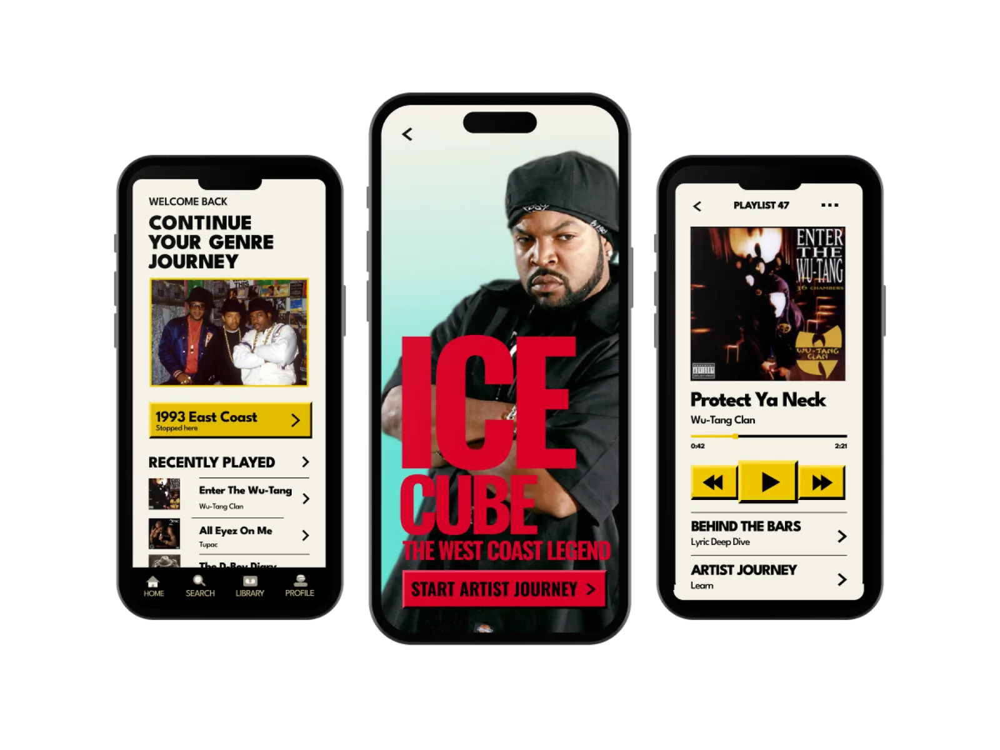
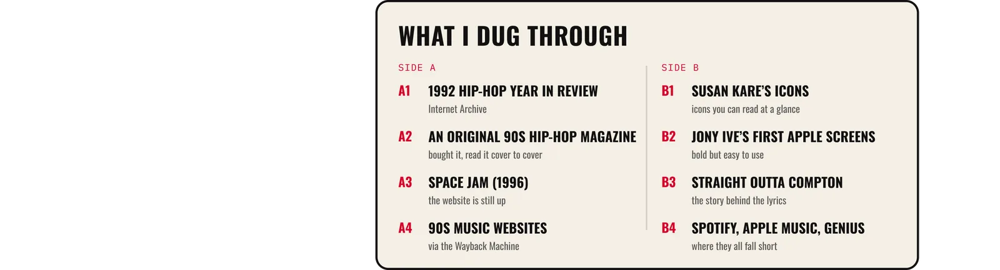
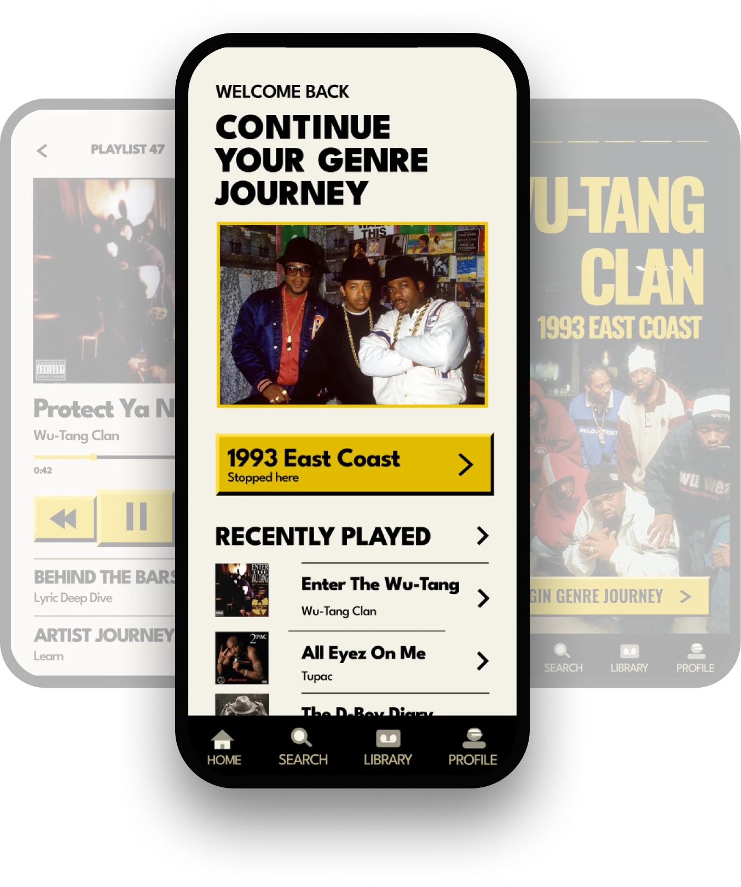
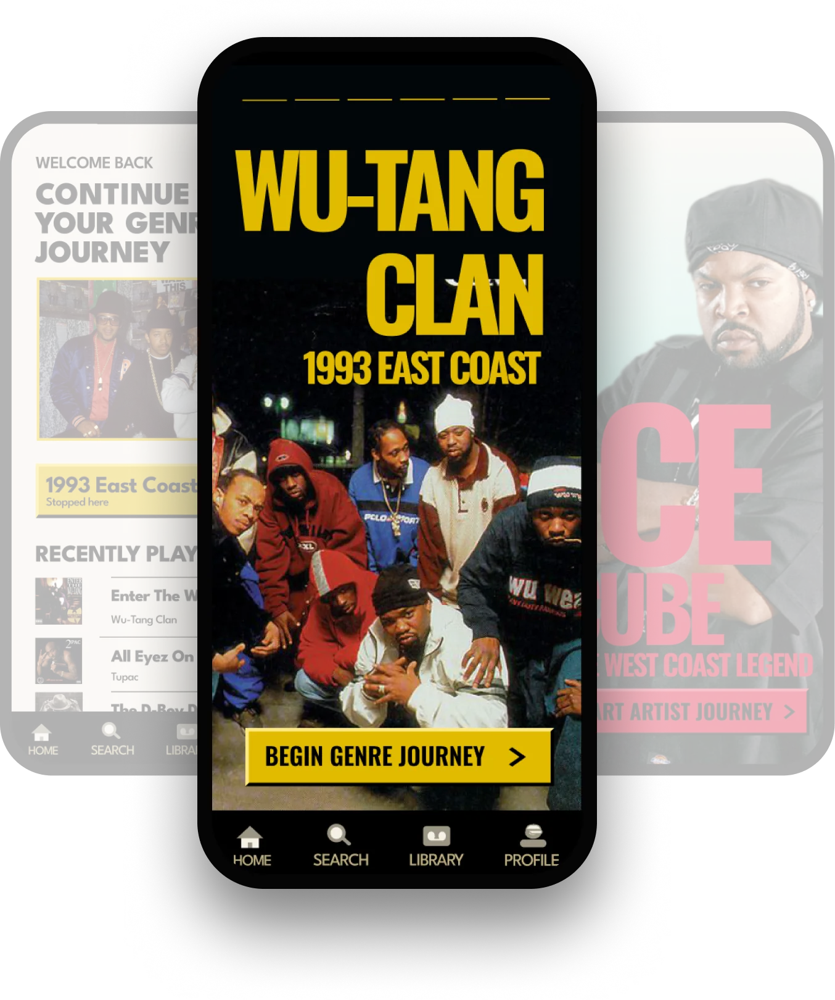
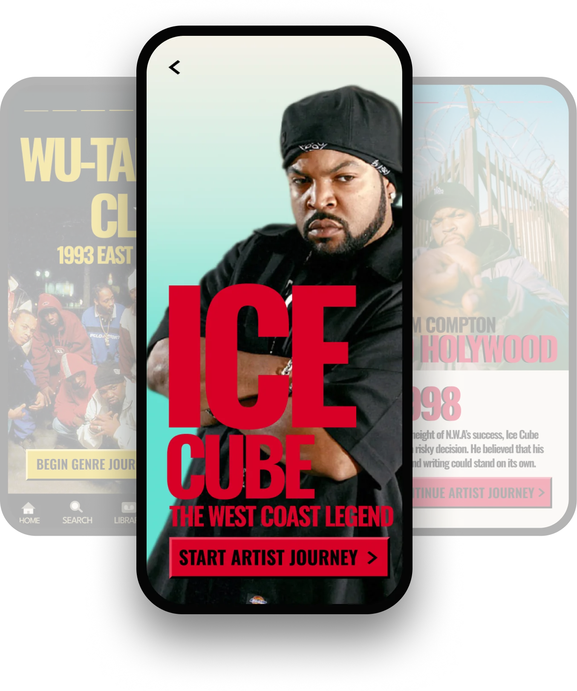
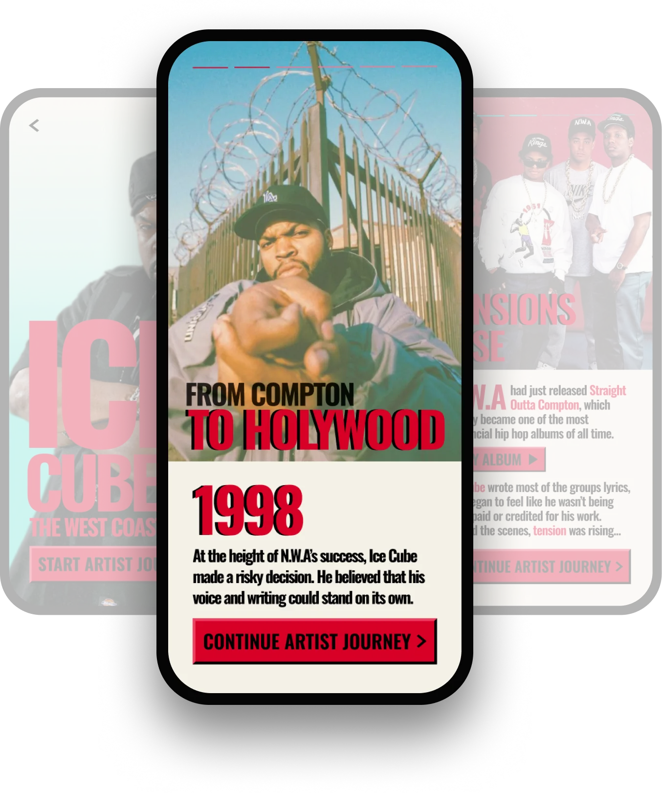
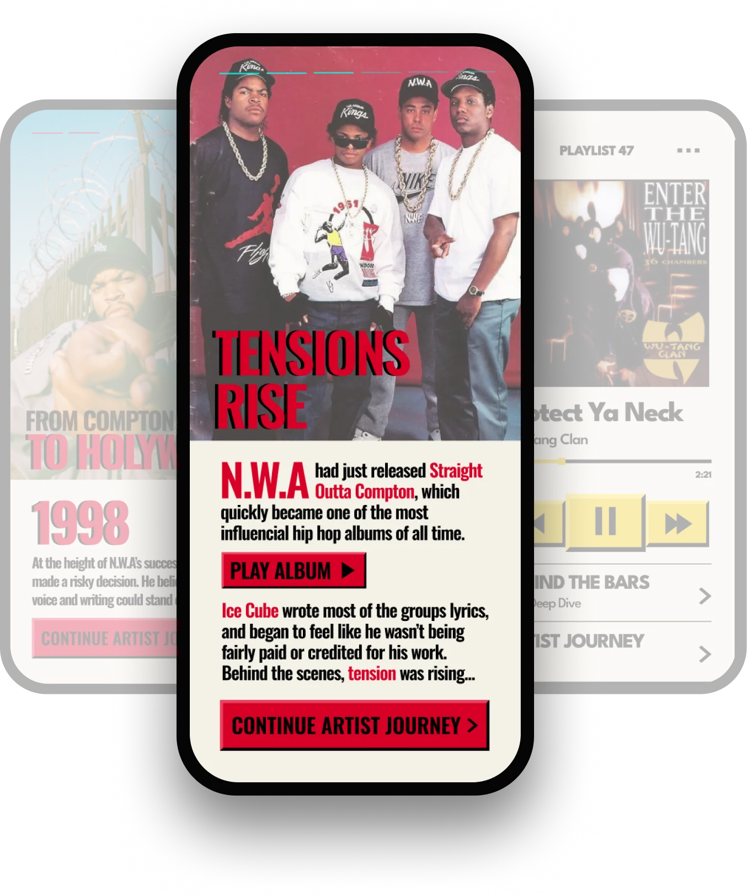
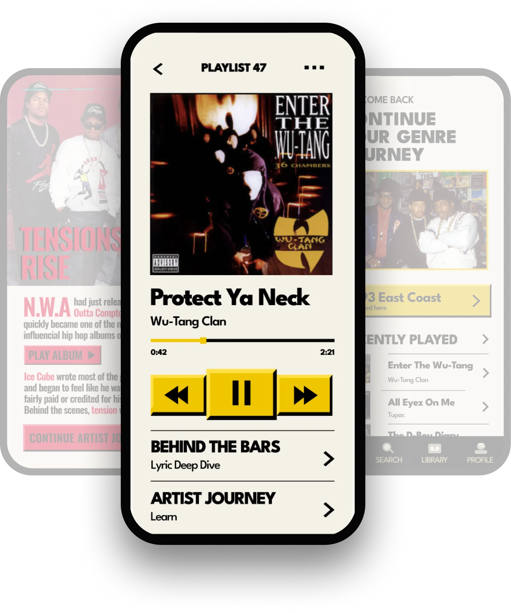

Learn the story behind a song while you listen to it.
A 90s hip-hop music player with artist journeys, lyric meanings and the music itself in one place.

I’m always googling what a lyric means. The answer is usually someone’s opinion on Reddit or a wall of text on Genius.
Spotify, Apple Music and YouTube Music are built for listening, not understanding, so you have to leave the app to learn anything.
close the gap between listening to a song and understanding it, so fans learn while they listen?







Research gets better when it’s specific. My searches for “90s app design” went nowhere until I started looking at physical magazines.
Prototype earlier, and test with someone who has never seen the app before.
Want the full process? Every sketch, note and wrong turn is in my Notion journal.
View Notion ↗